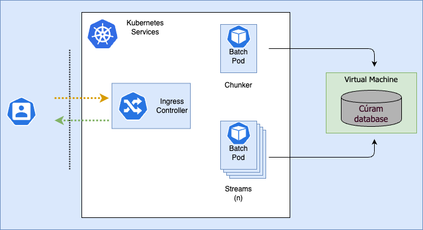

How batch streaming is deployed in Kubernetes #
Cúram on Kubernetes supports a different model for batch processing in AKS, where, as outlined earlier, Cúram batch processing can be built and deployed into its own pod. By running Cúram batch processing in its own pod, the pod can leverage the benefits of flexibility, elasticity, efficiency and the strategic value offered by cloud native architecture.
What is batch streaming? #
The batch streaming infrastructure provides a straightforward mechanism to implement a batch process so that it can be run in parallel (streams) across multiple pods. For example, if we wanted to issue payments, the chunker identifies all the cases to be paid and the stream would process a case and issue the payments that are due.

Figure 1: Cúram batch processing on kubernetes
For more information about batch streaming architecture, see Batch Streaming Architecture in the Cúram Batch Performance Mechanisms.
Cúram PDF documentation is available to download from Cúram Support Docs.
Setting up Batch Streaming with Helm #
Streamed jobs may be scheduled using Helm the same way as standalone Batch jobs.
In your override values file, add a section under the batch.streamed key for each of the streamed jobs to be scheduled.
batch:
streamed:
cash_reassessment:
schedule: "0 1 * * *"
chunker:
className: curam.core.sl.infrastructure.assessment.intf.CREOLEBulkCaseChunkReassessmentByProduct.process
parameters: productID=4100
replicaCount: 1
stream:
className: curam.core.sl.infrastructure.assessment.intf.CREOLEBulkCaseChunkReassessmentStream.process
replicaCount: 1
food_reassessment:
schedule: "0 2 * * */2"
chunker:
className: curam.core.sl.infrastructure.assessment.intf.CREOLEBulkCaseChunkReassessmentByProduct.process
parameters: productID=4200
replicaCount: 1
stream:
className: curam.core.sl.infrastructure.assessment.intf.CREOLEBulkCaseChunkReassessmentStream.process
replicaCount: 1
This example schedules Cash Assistance bulk reassessment to run at 1 AM every night, and Food Assistance bulk reassessment to run at 2 AM every second night.
The cash_reassessment and food_reassessment keys have no special meaning - their purpose is to provide separate definitions of different batch jobs.
These keys are used in names of the CronJob objects, e.g. <releaseName>-batch-food-reassessment-chunker and <releaseName>-batch-food-reassessment-stream
A complete list of configurable options for the chunkers and streams is available on the Helm Configuration Reference page.
Ad-hoc execution of Batch Streaming jobs #
An example for the steps required to set up Batch Streaming is outlined as follows. This example uses the bulk reassessment of food assistance case types.
The first stage is to set up a new YAML file for the streaming and chunking batch processing.
Note: No Cúram default installation settings were changed.
kubectl create job --from=cronjob/${release_name}-batch-queued \
-n $namespace -o yaml --dry-run=client process_name > process_name.yaml
Where:
namespaceis the namespace where you want to run the batch processingrelease_nameis the name of the release you are usingprocess_nameis the name of the batch process you are creating
You should also create a new file for each process, for example stream_foodassistance.yaml, and chunker_foodassistance.yaml
A corresponding YAML file is created. Open it with your preferred editor and add the following lines to the spec.template.spec.containers[0] section:
args:
- -Dbatch.program=curam.core.sl.infrastructure.assessment.intf.CREOLEBulkCaseChunkReassessmentByProduct.process
- -Dbatch.parameters="productID=4200"
Note: The args key should become a sibling of the command key.
args:
- -Dbatch.program=curam.core.sl.infrastructure.assessment.intf.CREOLEBulkCaseChunkReassessmentStream.process
Note: The args key should become a sibling of the command key.
You should now have YAML files for a chunker and streamer for bulk reassessment of food assistance case types.
Newer versions of kubectl add a metadata.ownerReferences field to the output of kubectl create job --from=....
This field must be removed before creating the new jobs from these YAML files.
Running batch streaming yaml files #
To orchestrate the batch process, run the following command and repeat for the chunker and streamer.
kubectl create -f stream_foodassistance.yaml -n $namespace
kubectl create -f chunker_foodassistance.yaml -n $namespace
Post batch processing #
The batch pods that are created for batch streaming are on demand.
When the batch processes finish, the pods remain in a completed state.
While this does not consume CPU or Memory resources on the worker nodes of your cluster, this may place added pressure on the Kubernetes API server
A TTL Controller for Finished Resources is available in Kubernetes, which will automatically clean up any completed pods after a specified length of time.
However, this feature is in Alpha state and has to be enabled using a feature flag on both the kube-apiserver and kube-controller-manager.
Note: It is not recommended to use Alpha features in a production environment.